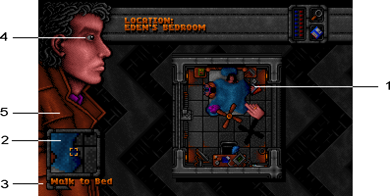

|
Cast:
| |
Narrator/Ryan |
|
Martin Sherman |
| Sparky |
Patrick Kelly |
| Louis King |
Dee Graham |
| Silverman |
John Haines |
| Eden |
Nikki Robinson |
| Diane Underwood |
Rena Kaye |
| Keeper |
Tony Dilon |
| Voice of Fate |
Carol Nudds |
Other parts played by members of the cast
Recorded at Videosonix Ltd. Sound Studio, Camden, London
Post-production by Reflex Interactive
|
Technical:
| |
Producer |
|
Patrick Kelly |
| Chief Sound Engineer |
Paul Harris |
| Asst. Sound Engineer |
Matt Grime |
| Sound Director |
Rik Yapp |
| Sound Sample Driver |
Creative Reality |
| Sound Assistant |
Matt Seldon |
| Concept and Design |
Creative Reality |
| Created by |
Neil Dodwell |
| Graphics and Effects |
David Dew |
| Music and Effects |
Matt Seldon |
| Props. designed by |
Stephen Marley |
| Props. Production |
Paul Oglesby |
| Sound Conversion |
Reflex Interactive |
| Guides written by |
Neil Dodwell and Rik Yapp |
| Script Co-ordinator |
Barry Tuck |
| Best Boy |
Chad Schofield |
| Key Grip |
Steve Lamb |
Creative Reality represented by Jacqui Lyons
Produced by Rik Yapp and Creative Reality
© 1994 Creative Reality
Published by Empire Interactive Entertainment
In your dreams you travel to the Dreamweb. Everyone does.
The plane of subconsciousness affects your life every day. It
controls the very heart of civilisation itself. This web is controlled by
seven people who each contain the power of a node within the web.
The characteristics of these people imbue the web, and hence the
World, with their own strengths and weaknesses. As one of the
nodes dies it is transferred to another human, and so the forces
within the web fluctuate as the nodes attain differing aspects.
But all this is about to be shattered. The forces of evil have
understood the power of the web, and now all seven nodes are
controlled by evil people. The web itself is about to be overrun and
destined to remain evil. Forever!
Only one person can stop this terrible catastrophe. The chosen
one. Ryan. YOU!
You have been summoned by the keepers of the Web. You must
destroy the controllers of all seven nodes to allow the Web to
regenerate and thus restore the equilibrium. The fate of civilisation
rests in your hand.
To aid you in this most difficult mission, Ryan's diary ‘The Diary of
a (Mad?) Man’ has been faithfully reproduced. Read the diary
carefully, it will help you in your quest.
Good luck.
ATTENTION:
This chapter is only relevant if you
intent to play using an old computer system.
IBM PC & COMPATIBLES
System requirements
To play Dreamweb you will require:
| |
20 MB free hard disk space |
| |
3 MB of extended or expanded memory
(if sound is required) |
| |
580 KB of free base memory |
| |
a mouse. |
The use of a Sound Blaster or compatible card is
recommended.
Note: To use expanded memory you must use an
expanded memory manager such as EMM386 or QEMM.
Refer to your DOS manual for details.
Installing Dreamweb
Boot up your computer and then insert the Disk
(Disk 1 for floppy disk version) in any
drive. Now type the drive letter followed by a colon. (e.g.
if you put the disk in drive A then type A: )
Type INSTALL and then press ENTER, the installation
procedure will now start.
The installation program will ask you which drive you
wish to install Dreamweb on. The default is to drive C: in
a directory called DREAMWEB, but you can change this
if you wish.
To hear the sound in the game you must select the
Sound Blaster option. The music and sound effects are all
sampled and require a Sound Blaster compatible card.
Follow the on-screen prompts.
Once you have answered all the questions, the
installation will commence. If you are installing
the floppy disk version, insert the numbered disks
when the program requests them.
Once installation is complete you may start playing the
game.
Starting Dreamweb
Once installation is complete you may start the game
by typing:
|
C:
| |
(assuming that the game was installed on
the C drive)
|
|
CD DREAMWEB
| |
(assuming the installation directory was
called DREAMWEB)
|
|
DREAMWEB
|
Changing the Sound Options
Once the game has been installed you may change
the sound options by running the game using the
following commands:
|
DREAMWEB /i5
| |
to run with Sound Blaster on
interrupt 5
|
|
DREAMWEB /i7
| |
to run with Sound Blaster on
interrupt 7
|
|
DREAMWEB /n
| |
to run with no sound
|
CD-ROM VERSION
The CD-ROM version of Dreamweb has been
designed to run directly from CD without any hard-disk
installation. The game however will need to write to the
hard-disk to store temporary files. These files will be
placed in a default directory on your C: drive called
DREAMWEB. (If any further technical details become
available, they will be included on a CD-ROM addendum
card in the pack.)
COMMODORE AMIGA
The Amiga version of the game requires 1 MB of
memory to run.
The game will autoboot from Disk 1. Simply turn on
the computer and insert disk 1 in the disk drive.
If you wish to install the game to hard-drive then insert
the last disk (Disk 3) in the drive and the installation
program will autoboot. Follow the on-screen instructions.
COMMODORE AMIGA 1200
The game will autoboot from Disk 1. Simply turn on
the computer and insert disk 1 in the disk drive.
If you wish to install the game to hard-drive then insert
the last disk (Disk 4) in the drive and the installation
program will autoboot. Follow the on-screen instructions.
The Diary of a (Mad?) Man
Ryan's diary contains important information you will
need during the game. On the final page, Ryan has
noted down some things to remember. We strongly
advise that you read the Diary fully before entering the
Dreamweb.
Playing Dreamweb for the first time
If you are playing Dreamweb for the first time, or if you
have previously played the game without saving your
position, you will see the game introduction first.
This may be skipped at any time by pressing the ESC
key. The introduction is followed by the credits. Again,
these may be skipped with ESC.
Playing Dreamweb from a saved position
If Dreamweb finds previous saved positions on the
disk it will give you the option to play from a saved
position, start the game from the beginning (including the
introduction), or to exit to DOS. Click with the left mouse
button when the pointer is over your chosen option.
If you decide to load a saved position you will be
presented with a list of saved games. Highlight the one
you wish to load and click on LOAD. Your saved game
will be restored and you can continue playing Dreamweb
from where you left off.
THE MAIN GAME SCREEN AND INVENTORY
Once the game has started you will be presented with
a screen laid out as shown below:

The main part of the screen is the map area (1) which
shows an overhead view of your character within a room.
The zoom box (2) shows a magnified view of what is
under the mouse pointer.
As you guide the pointer around the screen the status
line (3) tells you what will happen if you click the left
mouse button. You may do the following:
Walk to
an object. Your character can only examine
objects that he is reasonably close to. If he is too far
away, click on the object to walk to it. It will then be
examinable. You can also walk to exits on the map when
a blue arrow appears over the mouse pointer. This
allows you to move from room to room or leave a
location.
Examine
an object on the screen. Clicking on an
object will bring up a description of the object. From here
you may Open or Use an object or, if it has a picture,
click on it to pick it up. If you open the object or pick it up
you will be taken to the inventory screen. See Open
Inventory section below.
Talk to
a person on the screen. When you talk to
someone you will see a description of them followed by a
conversation (spoken on CD-ROM version). Click the
mouse button to skip to the next piece of speech. To
repeat the entire conversation, click on the icon of the
person at the top of the talk screen. You may return to
the map at any time using the EXIT icon. Talking to people
may provide vital clues or help in solving a puzzle.
Look around
the current location. The name of your
current location is shown at the top of the screen.
Clicking on Ryan's eye (4) brings up a short description
of your character's surroundings.
Zoom control:
This switches the zoom box (2) on and
off.
Disk options:
Allows you to save, load or exit to DOS
(see below).
Open inventory:
Clicking on Ryan's coat (5) takes
you to your inventory screen. This shows ten spaces for
objects in your inventory at a time. There are three
inventory pages, selectable by clicking on the page
numbers at the top right of the inventory. If an object has
been opened its contents will be shown below Ryan's
inventory.
Objects may be moved around in the inventory or
placed into open objects by clicking on the object using
the left mouse button. The pointer will ‘grab’ the object.
It can then be placed in any free space, swapped with
another item, or dropped by placing it over the bin at the
top of the screen and clicking.
To examine an object in Ryan's inventory or an open
object, click on it with the right mouse button.
To leave the inventory click on the EXIT icon in the
bottom right of the screen.
Note: Large objects will not fit inside smaller ones and
some objects will only allow certain objects to be placed
inside them. E.g. A CD player can only have CD's placed
inside it.
Use with
allows one object to act upon another. If you
examine an object on the map and use it, you may be
taken to the inventory screen and asked ‘use with.... ?’
Click on any item in Ryan's inventory to use them
together. E.g. Examine card reader and use it with the
cashcard.
THE TRAVEL SCREEN
When you leave a location (such as walking off the left
of the screen outside Eden's house) you will be taken to
the travel screen. Over the cityscape appears a travel
picture that shows a place you can travel to, with the
name of the place at the top of the screen. By clicking on
the two arrows either side of the name you can select
different locations. To travel to a place click on its travel
picture at the bottom of the screen.
To find out more information about a place before you
travel, click on the information icon (the notepaper in the
top right of the screen). If you decide you do not want to
travel, click on the EXIT icon and you will return to the map
of the current location.
SAVING AND RESTORING YOUR GAME
Selecting disk options takes you to a screen that
allow you to exit to DOS, carry out disk operations, or
return to the game. If you select disk operations you will
be presented with save and load icons.
When saving a game click on a free slot or a file that
has been used that you wish to overwrite. Then type the
name of your save game. Click on the disk icon to save
the game.
When loading a game just click on the file you wish to
load and then click on the disk icon.
STARTING THE NETWORK
In a few locations you will find a Network screen. The
Network is a cranky and ancient information system still
used by most people because it doesn't cost much to
use. Using the Network you can read current news and
weather reports and examine Network Cartridges using
an interface. If a cartridge is placed inside a Network
Interface its contents are readable on the Network.
Examine and use the monitor itself, not the keyboard or
interface, to access the Network.
NETWORK COMMANDS
There are a few basic commands to read files on the
Network. Each file is broken down into topics and some
files may be password protected. These commands are:
LIST:
Used on its own this lists all files on the system
including files on any cartridge being used. Once you
have a list of files you may type LIST plus a file name to
bring up a list of all topics in that file.
READ:
Having obtained a list of topics this command
will display all the text within a topic.
LOGON:
Any password protected file requires a key
before it is readable. You obtain keys by entering
passwords. For example, Ryan's key is RYAN. To read
any file protected by this key type LOGON RYAN. You
will then be asked for a password. You can log on to any
key on any Network machine provided you know the
password.
KEYS:
This lists all keys that you have successfully
logged on to.
HELP:
Displays help information.
EXIT:
Disconnects the Network and returns you to the
game.
When reading text you can stop it from scrolling by
hitting the space bar. Hit it again to continue reading.
The Network may help you find important information
during the game.